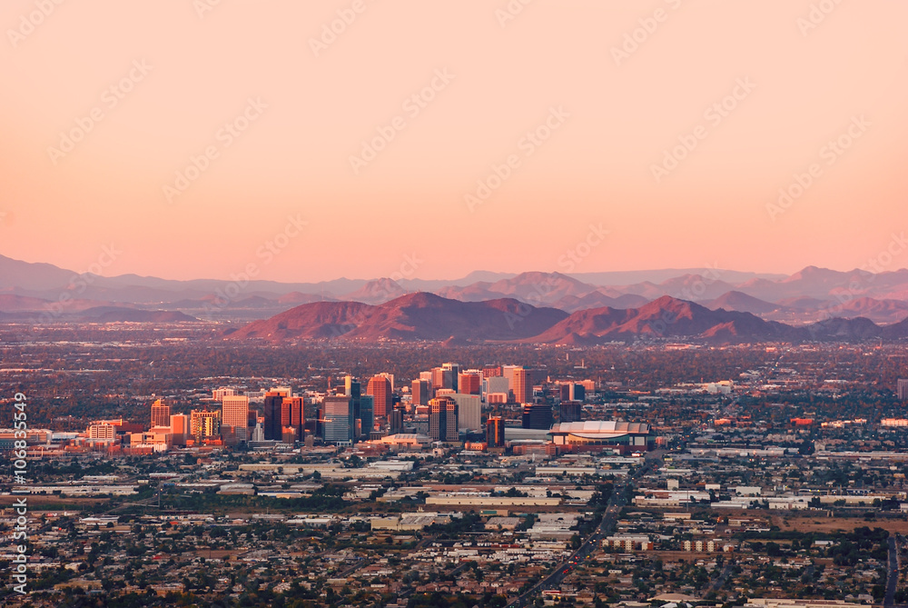

Welcome to Phoenix
Phoenix is the capitol of Arizona and is home to over 1.6 million residents. Founded in 1867, and incorporated in 1881, Phoenix has blossomed into a vibrant urban center and is a very rapidly growing city.
| Population | Incorporation Year | Region | Classification | Average Income |
|---|---|---|---|---|
| 1,680,992 | 1881 | Central Arizona | Urban | $52,080 |
-
Some attractions in Phoenix:
- State Capitol Museum
- Desert Botanical Garden
- Phoenix Zoo
-
Some things Phoenix is known and loved for:
- Great hiking trails
- Rich cultural history
- Home of major sports teams